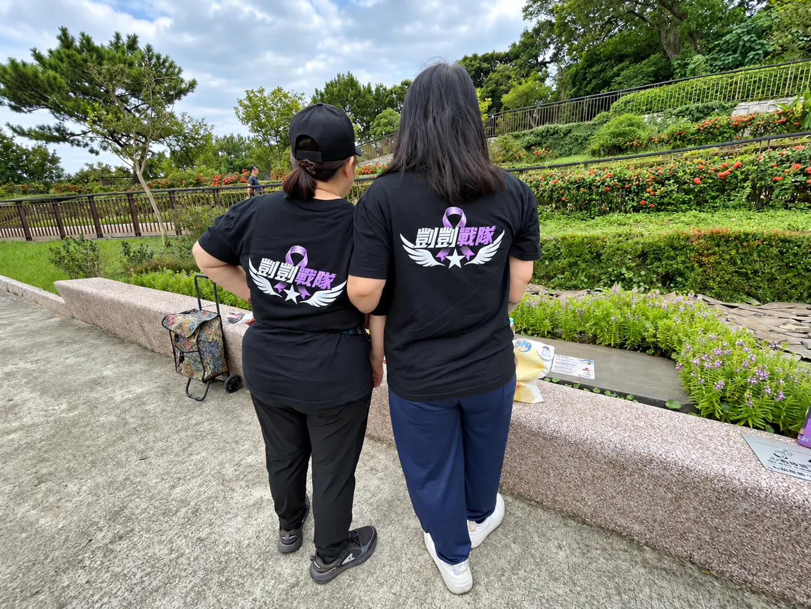
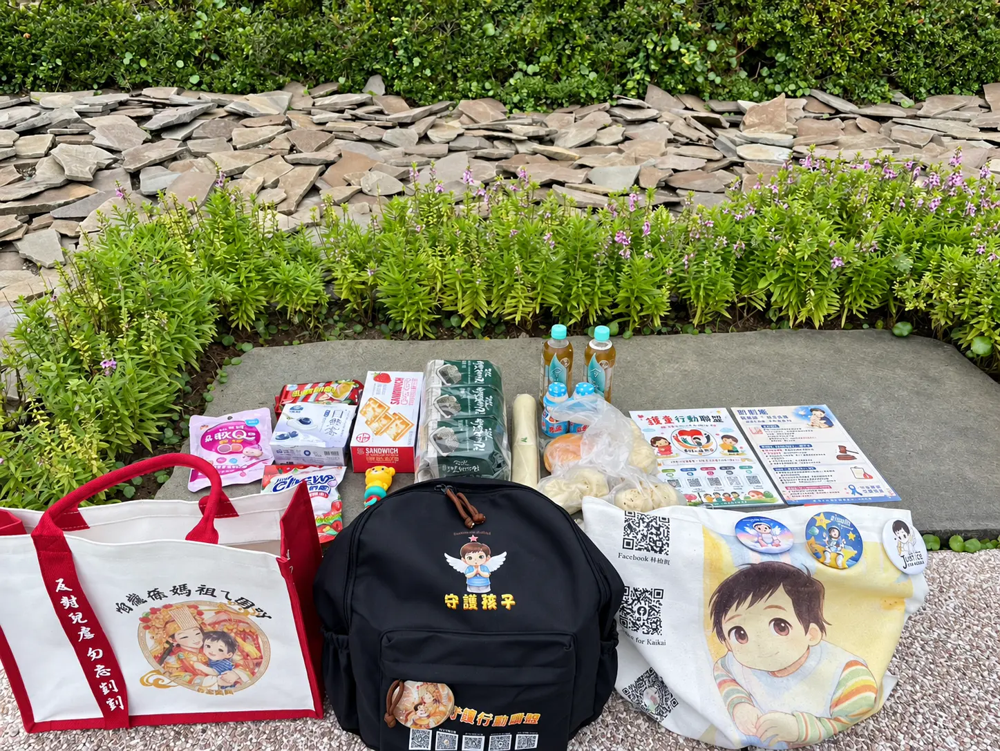
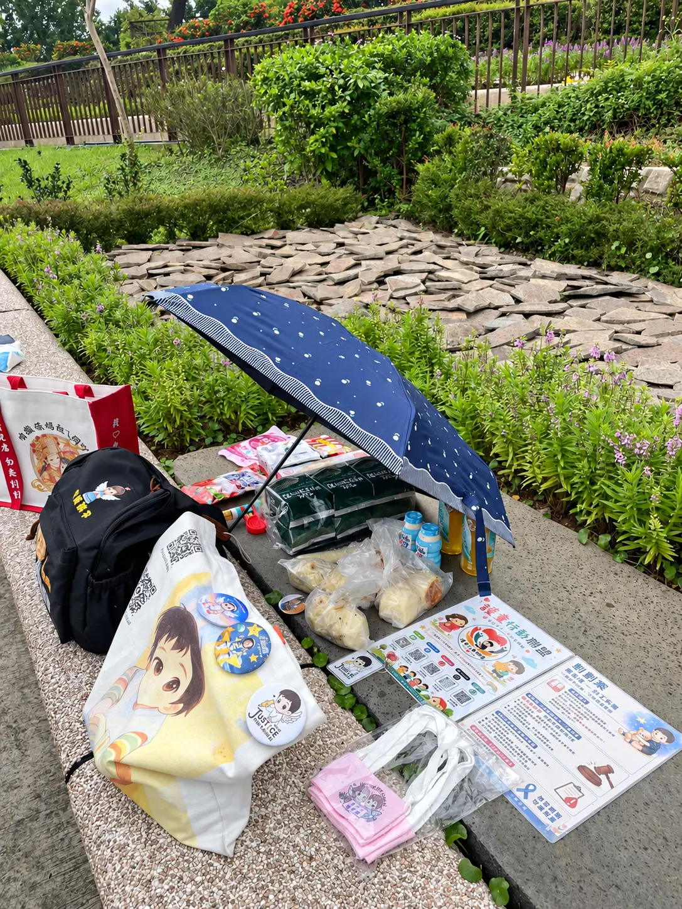
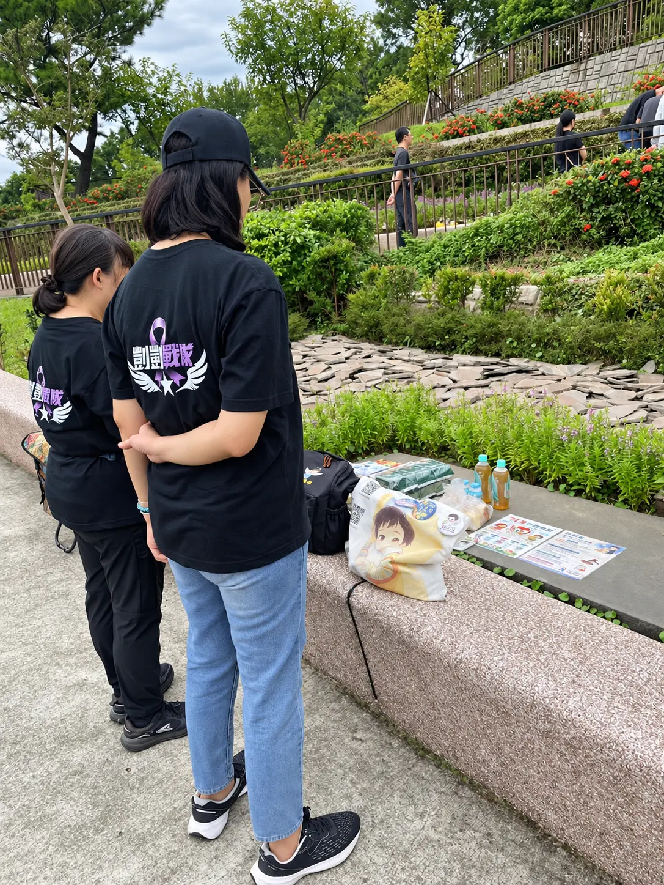
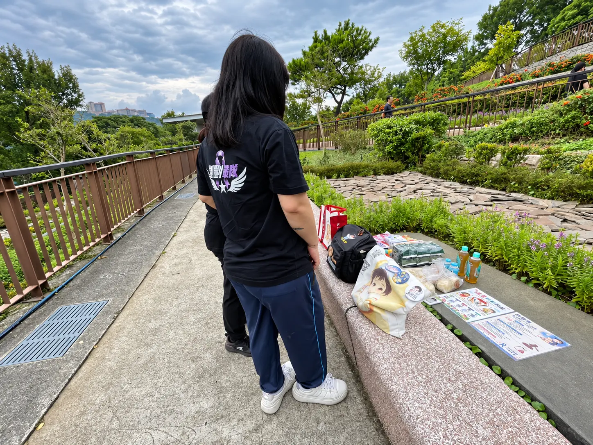
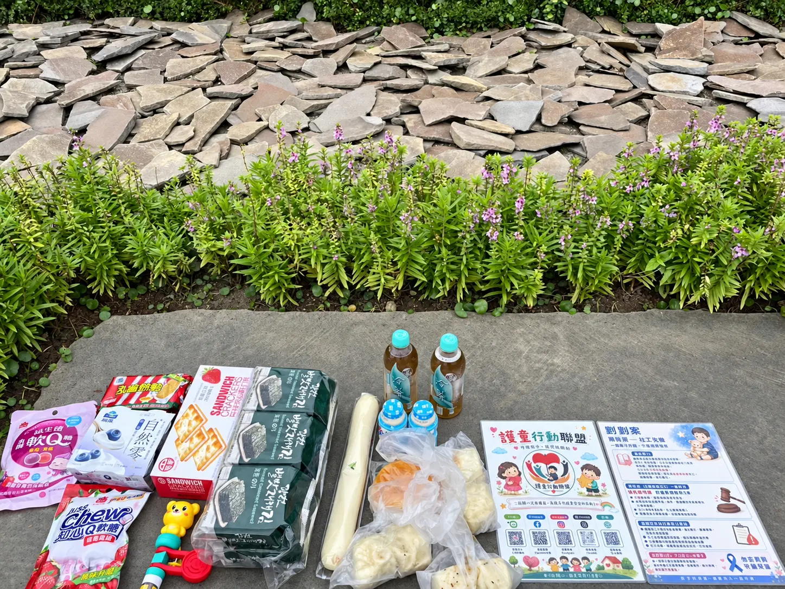
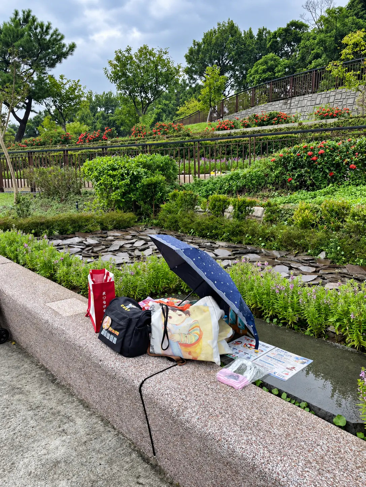
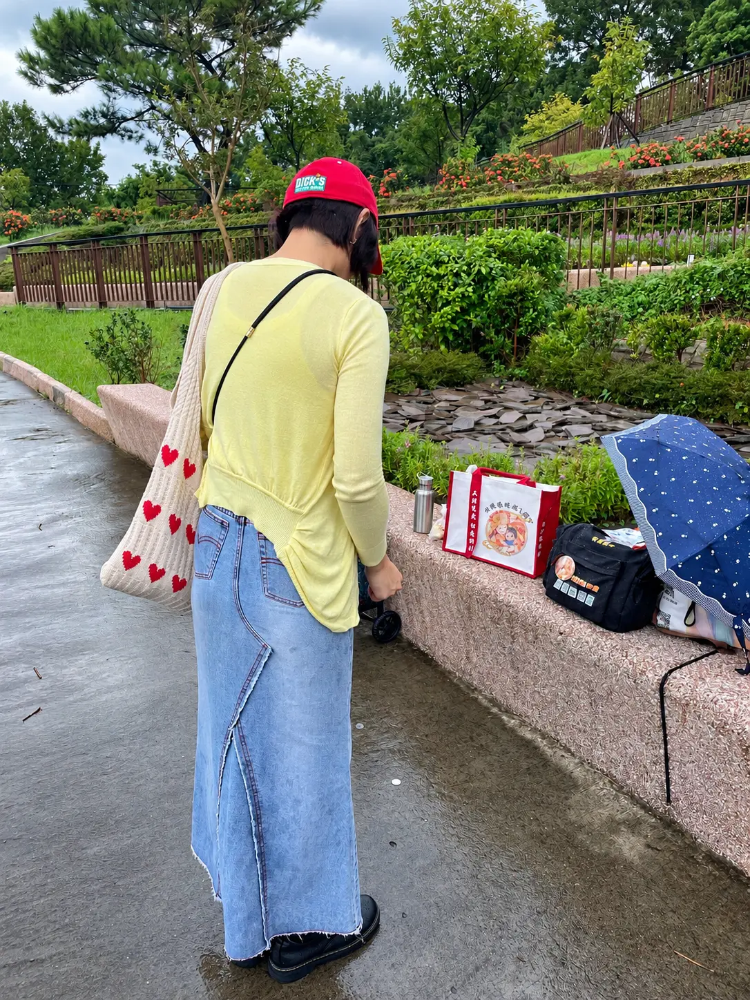

2026.09.08 · 剴剴墓園哀悼
想念沒有散去，
守護仍在路上
志工夥伴來到墓園，帶著花、點心與守護孩子的心意，靜靜陪伴、深深追念。願每一次記得，都成為推動制度改變的力量；願下一個孩子，在傷害發生以前，就有人伸手接住。
勿忘剴剴・讓思念成為守護
並肩記得，也並肩守護
一份份心意，都是沒有說完的想念
把祝福留在這裡，把行動帶回日常




活動紀錄・墓園追思水墨暈染僅作版面襯景；照片保留活動現場原貌。請尊重追思場合與影像中的每一位參與者。